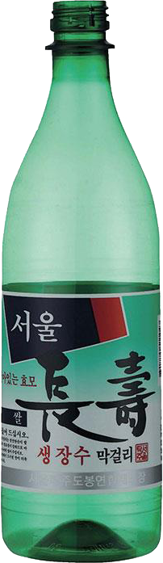
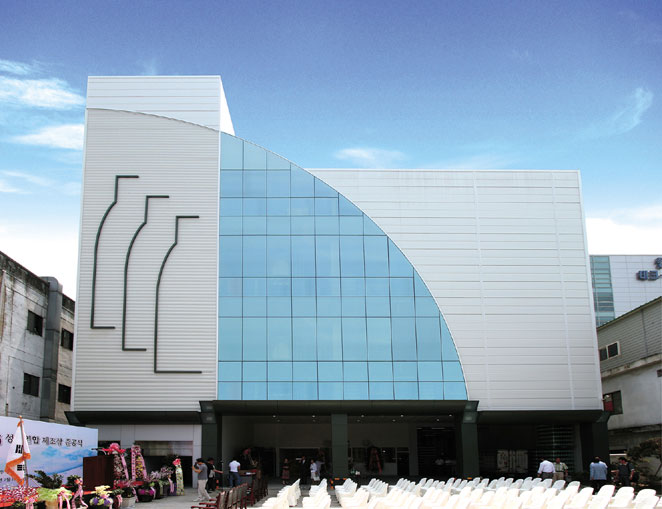

주세 보전에 협력, 탁주 유통질서의 확립 및 부정탁주 척결에 앞장서 우수한 연구원으로 구성된 실험개발실을 운영하여 끊임없는 연구와 노력을 하고 있습니다. PET 병입 막걸리 탄생시켰으며 장기보관과 수출에 용이한 캔 막걸리도 만들어냈습니다. 주원료 백미만을 사용한 변함없는 고품질의 고급막걸리를 공급하고 있습니다.
서울 주조협회 창립
오일기업(주) 설립
서울 장수 생막걸리 생산
보존기간 12개월의 살균탁주(탄산 주입) 쌀 막걸리 제조(CAN)
모범 납세자 표창(국세청)
모범 납세자 표창(국세청)
(사)한국쌀가공식품협회 주관 10대 우수 쌀 가공식품 선정(월매 쌀막걸리)

서울지역 51개 제조장을 합동 제조장으로 개편
서울탁주제조협회 명칭 변경
보존기간 8개월의 살균탁주(탄산 주입) 쌀 막걸리 제조(PET)
산하법인 서울제국 설립
모범 납세자 표창(국세청)
국세청 주최 전통주품평회에서 명품주로 선정 (장수생막걸리)
성동연합제조장 준공
산하법인 서울장수 주식회사 설립
